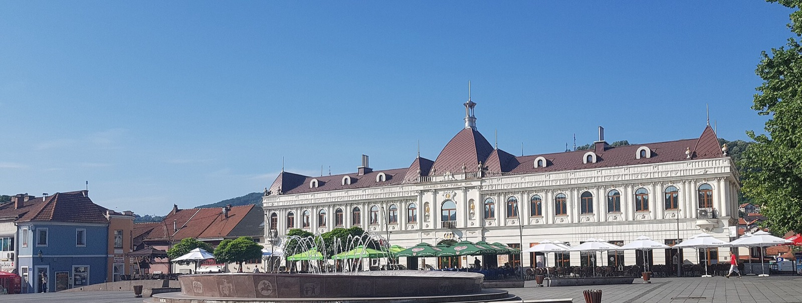

Tuzla je grad ukusne i pristupačne hrane, sa bogatom tradicijom bosanske kuhinje i živahnom kafanskom scenom. Bilo da tražite prave ćevape, toplu pitu ispod sača ili mirno mjesto za večeru uz Panonska jezera, ovaj vodič vodi vas kroz najbolja mjesta za jelo u Tuzli i pomaže da jedete kao mještanin, a ne kao turista.
Tradicionalna bosanska kuhinja u Tuzli
Tuzlanska kuhinja dio je bogatog bosanskog gastronomskog naslijeđa. Obavezno probajte ćevape u somunu sa lukom, pite poput burka, sirnice i zeljanice, te bosanski lonac koji se polako krčka satima. Tu su i sogan-dolma, japrak i punjene paprike, a za kraj baklava ili tufahije uz fildžan bosanske kafe. Porcije su izdašne, a cijene znatno niže nego u zapadnoevropskim gradovima.

Gdje jesti u centru Tuzle
Srce gastronomske ponude je u centru grada, oko Trga slobode i gradskog korza. Tu se na maloj površini nižu restorani, ćevabdžinice, picerije i kafane, pa lako pronađete i tradicionalna i internacionalna jela. Centar je idealan za ručak u prolazu ili opušteniju večeru, a ljeti se stolovi izlivaju na otvorene terase. Za širu sliku gradskih atrakcija pogledajte i naš vodič o tome šta posjetiti u Tuzli.
Roštilj i restorani blizu Panonskih jezera
Tokom ljetne sezone kupanja, okolina Panonskih jezera i parka Slana Banja postaje omiljeno mjesto za jelo na otvorenom. Tu su roštilji, kafane i restorani sa terasama, mnogi sa pogledom na vodu. Kombinacija kupanja i ručka uz jezera jedan je od najljepših načina da provedete ljetni dan u Tuzli. Više o samim jezerima saznajte u vodiču o Panonskim jezerima u Tuzli.
Kafane, slastičarne i kafa
Bosanska kafa nije samo piće, nego ritual. U tuzlanskim kafanama i slastičarnama uživa se u kafi uz baklavu, hurmašice ili sladoled, a kafane u starom gradu mjesto su gdje se mještani sastaju i razgovaraju satima. Za doživljaj lokalnog tempa života, sjednite na kafu u centru i jednostavno posmatrajte grad.
Gdje jesti u blizini Apartmani Elegance
Apartmani Elegance na adresi Donji Mosnik 7 smješteni su blizu centra i Panonskih jezera, što znači da su restorani, kafane i roštilji na kratkoj šetnji ili svega nekoliko minuta vožnje. Kao domaćini iz Tuzle, rado preporučujemo provjerena lokalna mjesta prema vašem ukusu i budžetu. A ako želite kuhati sami, svi naši apartmani imaju potpuno opremljenu kuhinju, uz prodavnice i pijacu u blizini. Pogledajte ponudu apartmana ili rezervišite svoj termin direktno.